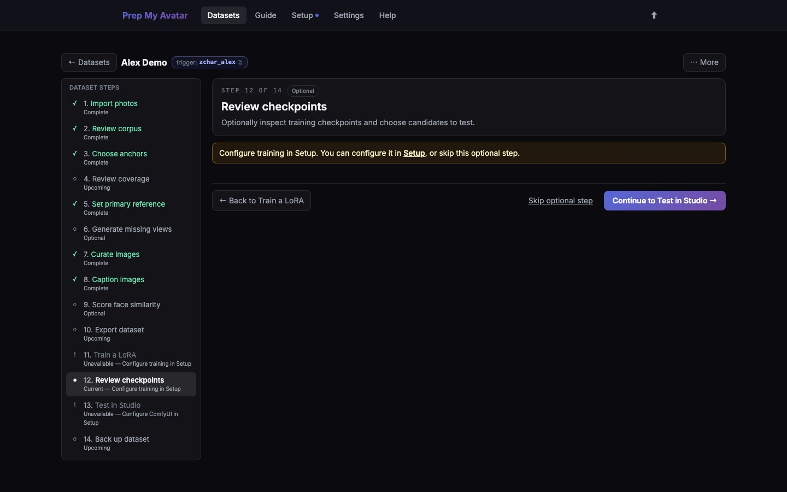

First run · 19 of 21
Step 19: Review checkpoints
A checkpoint is a saved LoRA from a particular point during training. The last checkpoint is not automatically the best; an earlier one may preserve identity while responding more flexibly to prompts. This step applies only when Step 18 produced checkpoints. Otherwise, continue to Step 21.

Before you begin
Wait for training to produce checkpoints. Face scoring is helpful but optional. Do not delete intermediate checkpoints until you have compared their outputs.
Do this
- Open Review checkpoints in the dataset step navigator. Its URL ends in
/checkpointsand it is labelled Optional. - Choose the model family and training base used by the run.
- Review the visible step and dataset-version badges. Select Run folder to inspect that run's raw checkpoints, sample images, training log, and other files.
- If face scoring is available, run the checkpoint scoring action and treat its winner as a candidate—not a final decision.
- Keep the checkpoints you want to test in Studio.
- Select Import → on each checkpoint you want to test. This copies the raw run checkpoint into the labelled ComfyUI LoRA folder; a checkpoint left only in the run folder is not available to Studio.
- Wait for the imported state to appear, then use LoRA folder if you want to verify the copied file.
- Move an unwanted checkpoint to Trash only after you are sure it is not needed.
- Use the cleanup action only after a best checkpoint has been established; it keeps the final and any scored winner described by the UI.
- Select Continue to Test in Studio, or Skip optional step when no checkpoints exist.
You are finished when
You have identified the small set worth testing, know which run produced each one, and imported at least one compatible checkpoint into ComfyUI for Studio. Continue to Step 20; if you are not using Studio, skip to Step 21.